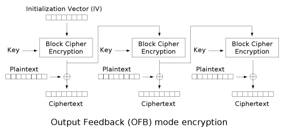

分组模式¶
分组加密会将明文消息划分为固定大小的块，每块明文分别在密钥控制下加密为密文。当然并不是每个消息都是相应块大小的整数倍，所以我们可能需要进行填充。
填充规则¶
正如我们之前所说，在分组加密中，明文的长度往往并不满足要求，需要进行 padding，而如何 padding 目前也已经有了不少的规定。
常见的 填充规则 如下。需要注意的是，即使消息的长度是块大小的整数倍，仍然需要填充。
一般来说，如果在解密之后发现 Padding 不正确，则往往会抛出异常。我们也因此可以知道 Paddig 是否正确。
Pad with bytes all of the same value as the number of padding bytes (PKCS5 padding)¶
举例子如下
DES INPUT BLOCK = f o r _ _ _ _ _ (IN HEX) 66 6F 72 05 05 05 05 05 KEY = 01 23 45 67 89 AB CD EF DES OUTPUT BLOCK = FD 29 85 C9 E8 DF 41 40
Pad with 0x80 followed by zero bytes (OneAndZeroes Padding)¶
举例子如下
DES INPUT BLOCK = f o r _ _ _ _ _ (IN HEX) 66 6F 72 80 00 00 00 00 KEY = 01 23 45 67 89 AB CD EF DES OUTPUT BLOCK = BE 62 5D 9F F3 C6 C8 40
这里其实就是和 md5 和 sha1 的 padding 差不多。
Pad with zeroes except make the last byte equal to the number of padding bytes¶
举例子如下
DES INPUT BLOCK = f o r _ _ _ _ _ (IN HEX) 66 6f 72 00 00 00 00 05 KEY = 01 23 45 67 89 AB CD EF DES OUTPUT BLOCK = 91 19 2C 64 B5 5C 5D B8
Pad with zero (null) characters¶
举例子如下
DES INPUT BLOCK = f o r _ _ _ _ _ (IN HEX) 66 6f 72 00 00 00 00 00 KEY = 01 23 45 67 89 AB CD EF DES OUTPUT BLOCK = 9E 14 FB 96 C5 FE EB 75
Pad with spaces¶
举例子如下
DES INPUT BLOCK = f o r _ _ _ _ _ (IN HEX) 66 6f 72 20 20 20 20 20 KEY = 01 23 45 67 89 AB CD EF DES OUTPUT BLOCK = E3 FF EC E5 21 1F 35 25
ECB¶
ECB模式全称为电子密码本模式（Electronic codebook）。
加密¶

解密¶

优缺点¶
优点¶
- 实现简单。
- 不同明文分组的加密可以并行计算，速度很快。
缺点¶
- 同样的明文块会被加密成相同的密文块，不会隐藏明文分组的统计规律。正如下图所示

为了解决统一明文产生相同密文的问题，提出了其它的加密模式。
典型应用¶
- 用于随机数的加密保护。
- 用于单分组明文的加密。
2016 ABCTF aes-mess-75¶
题目描述如下
We encrypted a flag with AES-ECB encryption using a secret key, and got the hash: e220eb994c8fc16388dbd60a969d4953f042fc0bce25dbef573cf522636a1ba3fafa1a7c21ff824a5824c5dc4a376e75 However, we lost our plaintext flag and also lost our key and we can't seem to decrypt the hash back :(. Luckily we encrypted a bunch of other flags with the same key. Can you recover the lost flag using this? [HINT] There has to be some way to work backwards, right?
可以看出，这个加密是一个 ECB 加密，然后 AES 是 16 个字节一组，每个字节可以使用两个 16 进制字符表示，因此，我们每 32 个字符一组进行分组，然后去对应的 txt 文件中搜索即可。
对应 flag
e220eb994c8fc16388dbd60a969d4953 abctf{looks_like
f042fc0bce25dbef573cf522636a1ba3 _you_can_break_a
fafa1a7c21ff824a5824c5dc4a376e75 es}
最后一个显然在加密时进行了 padding。
题目¶
- 2018 PlaidCTF macsh
CBC¶
CBC全称为密码分组链接（Cipher-block chaining） 模式，这里
- IV 不要求保密
- IV 必须是不可预测的，而且要保证完整性。
加密¶

解密¶

优缺点¶
优点¶
- 密文块不仅和当前密文块相关，而且和前一个密文块或 IV 相关，隐藏了明文的统计特性。
- 具有有限的两步错误传播特性，即密文块中的一位变化只会影响当前密文块和下一密文块。
- 具有自同步特性，即第 k 块起密文正确，则第 k+1 块就能正常解密。
缺点¶
- 加密不能并行，解密可以并行。
应用¶
CBC 应用十分广泛
- 常见的数据加密和 TLS 加密。
- 完整性认证和身份认证。
攻击¶
- 字节反转攻击
- IV 向量，影响第一个明文分组
- 第 n 个密文分组，影响第 n + 1 个明文分组
- Padding Oracle Attack，具体参见下面介绍。
PCBC¶
PCBC 的全称为明文密码块链接（Plaintext cipher-block chaining）。也称为填充密码块链接（Propagating cipher-block chaining）。
加密¶

解密¶

特点¶
- 解密过程难以并行化
- 互换邻接的密文块不会对后面的密文块造成影响
CFB¶
CFB 全称为密文反馈模式（Cipher feedback）。
加密¶

解密¶

优缺点¶
优点¶
- 适应于不同数据格式的要求
- 有限错误传播
- 自同步
缺点¶
- 加密不能并行化，解密不能并行
应用场景¶
该模式适应于数据库加密，无线通信加密等对数据格式有特殊要求的加密环境。
题目¶
- HITCONCTF-Quals-2015-Simple-(Crypto-100)
OFB¶
OFB全称为输出反馈模式（Output feedback），其反馈内容是分组加密后的内容而不是密文。
加密¶

解密¶

优缺点¶
优点¶
- 不具有错误传播特性。
缺点¶
- IV 无需保密，但是对每个消息必须选择不同的 IV。
- 不具有自同步能力。
适用场景¶
适用于一些明文冗余度比较大的场景，如图像加密和语音加密。
CTR¶
CTR全称为计数器模式（Counter mode），该模式由 Diffe 和 Hellman 设计。
加密¶

解密¶

题目¶
- 2017 star ctf ssss
- 2017 star ctf ssss2
Padding Oracle Attack¶
介绍¶
Padding Oracle Attack 攻击一般需要满足以下几个条件
- 加密算法
- 采用 PKCS5 Padding 的加密算法。 当然，非对称加密中 OAEP 的填充方式也有可能会受到影响。
- 分组模式为 CBC 模式。
- 攻击者能力
- 攻击者可以拦截上述加密算法加密的消息。
- 攻击者可以和 padding oracle（即服务器） 进行交互：客户端向服务器端发送密文，服务器端会以某种返回信息告知客户端 padding 是否正常。
Padding Oracle Attack 攻击可以达到的效果如下
- 在不清楚 key 和 IV 的前提下解密任意给定的密文。
原理¶
Padding Oracle Attack 攻击的基本原理如下
- 对于很长的消息一块一块解密。
- 对于每一块消息，先解密消息的最后一个字节，然后解密倒数第二个字节，依次类推。
这里我们回顾一下 CBC 的
- 加密
- 解密
我们主要关注于解密，这里我们并不知道 IV 和 key。这里我们假设密文块的长度为 n 个字节。
假设我们截获了密文 Y，以获取密文 Y 的最后一个字节为例子进行分析。为了获取 Y 的内容，我们首先需要伪造一块密文 F 以便于可以修改 Y 对应明文的最后一个字节。这是因为若我们构造密文 F|Y ，那么解密 Y 时具体为
$$
P=D_K(Y)\oplus F
$$
所以修改密文 F 的最后一个字节 F_{n} 可以修改 Y 对应的明文的最后一个字节。下面给出获取 P 最后一个字节的过程
- i=0，设置 F 的每个字节为随机字节。
- 设置 F_n=i \oplus 0x01
- 将 F|Y 发送给服务器，如果 P 的最后一个字节是 i 的话，那么最后的 padding 就是 0x01，不会出现错误。否则，只有 P 的最后 P_n \oplus i \oplus 0x01 字节都是 P_n \oplus i \oplus 0x01 才不会报错。而且，需要注意的是 padding 的字节只能是 0 到 n。 因此，若想要使得在 F 随机地情况下，并且满足padding 字节大小的约束情况下还不报错概率很小。所以在服务器端不报错的情况下，我们可以认为我们确实获取了正确的字节。
- 在出现错误的情况下，i=i+1，跳转到2。
当获取了 P 的最后一个字节后，我们可以继续获取 P 的倒数第二个字节，此时需要设置 F_n=P_n\oplus 0x02 ，同时设置 F_{n-1}=i \oplus 0x02 去枚举 i。
所以，综上所示，Padding Oracle Attack 其实在一定程度上是一种具有很大概率成功的攻击方法。
然而，需要注意的是，往往遇到的一些现实问题并不是标准的 Padding Oracle Attack 模式，我们往往需要进行一些变形。
2017 HITCON Secret Server¶
分析¶
程序中采用的加密是 AES CBC，其中采用的 padding 与 PKCS5 类似
def pad(msg): pad_length = 16-len(msg)%16 return msg+chr(pad_length)*pad_length def unpad(msg): return msg[:-ord(msg[-1])]
但是，在每次 unpad 时并没有进行检测，而是直接进行 unpad。
其中，需要注意的是，每次和用户交互的函数是
send_msg，接受用户的明文，使用固定的2jpmLoSsOlQrqyqE作为 IV，进行加密，并将加密结果输出。recv_msg，接受用户的 IV 和密文，对密文进行解密，并返回。根据返回的结果会有不同的操作
msg = recv_msg().strip() if msg.startswith('exit-here'): exit(0) elif msg.startswith('get-flag'): send_msg(flag) elif msg.startswith('get-md5'): send_msg(MD5.new(msg[7:]).digest()) elif msg.startswith('get-time'): send_msg(str(time.time())) elif msg.startswith('get-sha1'): send_msg(SHA.new(msg[8:]).digest()) elif msg.startswith('get-sha256'): send_msg(SHA256.new(msg[10:]).digest()) elif msg.startswith('get-hmac'): send_msg(HMAC.new(msg[8:]).digest()) else: send_msg('command not found')
主要漏洞¶
这里我们再简单总结一下我们已有的部分
- 加密
- 加密时的 IV 是固定的而且已知。
- 'Welcome!!' 加密后的结果。
- 解密
- 我们可以控制 IV。
首先，既然我们知道 Welcome!! 加密后的结果，还可以控制 recv_msg 中的 IV，那么根据解密过程
如果我们将 Welcome!! 加密后的结果输入给 recv_msg，那么直接解密后的结果便是 （Welcome!!+'\x07'*7) xor iv，如果我们恰当的控制解密过程中传递的 iv，那么我们就可以控制解密后的结果。也就是说我们可以执行上述所说的任意命令。从而，我们也就可以知道 flag 解密后的结果。
其次，在上面的基础之上，如果我们在任何密文 C 后面添加自定义的 IV 和 Welcome 加密后的结果，作为输入传递给 recv_msg，那么我们便可以控制解密之后的消息的最后一个字节，那么由于 unpad 操作，我们便可以控制解密后的消息的长度减小 0 到 255。
利用思路¶
基本利用思路如下
- 绕过 proof of work
- 根据执行任意命令的方式获取加密后的 flag。
- 由于 flag 的开头是
hitcon{，一共有7个字节，所以我们任然可以通过控制 iv 来使得解密后的前 7 个字节为指定字节。这使得我们可以对于解密后的消息执行get-md5命令。而根据 unpad 操作，我们可以控制解密后的消息恰好在消息的第几个字节处。所以我们可以开始时将控制解密后的消息为hitcon{x，即只保留hitcon{后的一个字节。这样便可以获得带一个字节哈希后的加密结果。类似地，我们也可以获得带制定个字节哈希后的加密结果。 - 这样的话，我们可以在本地逐字节爆破，计算对应
md5，然后再次利用任意命令执行的方式，控制解密后的明文为任意指定命令，如果控制不成功，那说明该字节不对，需要再次爆破；如果正确，那么就可以直接执行对应的命令。
具体代码如下
#coding=utf-8 from pwn import * import base64, time, random, string from Crypto.Cipher import AES from Crypto.Hash import SHA256, MD5 #context.log_level = 'debug' if args['REMOTE']: p = remote('52.193.157.19', 9999) else: p = remote('127.0.0.1', 7777) def strxor(str1, str2): return ''.join([chr(ord(c1) ^ ord(c2)) for c1, c2 in zip(str1, str2)]) def pad(msg): pad_length = 16 - len(msg) % 16 return msg + chr(pad_length) * pad_length def unpad(msg): return msg[:-ord(msg[-1])] # 去掉pad def flipplain(oldplain, newplain, iv): """flip oldplain to new plain, return proper iv""" return strxor(strxor(oldplain, newplain), iv) def bypassproof(): p.recvuntil('SHA256(XXXX+') lastdata = p.recvuntil(')', drop=True) p.recvuntil(' == ') digest = p.recvuntil('\nGive me XXXX:', drop=True) def proof(s): return SHA256.new(s + lastdata).hexdigest() == digest data = pwnlib.util.iters.mbruteforce( proof, string.ascii_letters + string.digits, 4, method='fixed') p.sendline(data) p.recvuntil('Done!\n') iv_encrypt = '2jpmLoSsOlQrqyqE' def getmd5enc(i, cipher_flag, cipher_welcome): """return encrypt( md5( flag[7:7+i] ) )""" ## keep iv[7:] do not change, so decrypt won't change new_iv = flipplain("hitcon{".ljust(16, '\x00'), "get-md5".ljust( 16, '\x00'), iv_encrypt) payload = new_iv + cipher_flag ## calculate the proper last byte number last_byte_iv = flipplain( pad("Welcome!!"), "a" * 15 + chr(len(cipher_flag) + 16 + 16 - (7 + i + 1)), iv_encrypt) payload += last_byte_iv + cipher_welcome p.sendline(base64.b64encode(payload)) return p.recvuntil("\n", drop=True) def main(): bypassproof() # result of encrypted Welcome!! cipher = p.recvuntil('\n', drop=True) cipher_welcome = base64.b64decode(cipher)[16:] log.info("cipher welcome is : " + cipher_welcome) # execute get-flag get_flag_iv = flipplain(pad("Welcome!!"), pad("get-flag"), iv_encrypt) payload = base64.b64encode(get_flag_iv + cipher_welcome) p.sendline(payload) cipher = p.recvuntil('\n', drop=True) cipher_flag = base64.b64decode(cipher)[16:] flaglen = len(cipher_flag) log.info("cipher flag is : " + cipher_flag) # get command not found cipher p.sendline(base64.b64encode(iv_encrypt + cipher_welcome)) cipher_notfound = p.recvuntil('\n', drop=True) flag = "" # brute force for every byte of flag for i in range(flaglen - 7): md5_indexi = getmd5enc(i, cipher_flag, cipher_welcome) md5_indexi = base64.b64decode(md5_indexi)[16:] log.info("get encrypt(md5(flag[7:7+i])): " + md5_indexi) for guess in range(256): # locally compute md5 hash guess_md5 = MD5.new(flag + chr(guess)).digest() # try to null out the md5 plaintext and execute a command payload = flipplain(guess_md5, 'get-time'.ljust(16, '\x01'), iv_encrypt) payload += md5_indexi p.sendline(base64.b64encode(payload)) res = p.recvuntil("\n", drop=True) # if we receive the block for 'command not found', the hash was wrong if res == cipher_notfound: print 'Guess {} is wrong.'.format(guess) # otherwise we correctly guessed the hash and the command was executed else: print 'Found!' flag += chr(guess) print 'Flag so far:', flag break if __name__ == "__main__": main()
最后结果如下
Flag so far: Paddin9_15_ve3y_h4rd__!!}\x10\x10\x10\x10\x10\x10\x10\x10\x10\x10\x10\x10\x10\x10\x10\x10
2017 HITCON Secret Server Revenge¶
描述¶
The password of zip is the flag of "Secret Server"
分析¶
这个程序时接着上面的程序继续搞的，不过这次进行的简单的修改
- 加密算法的 iv 未知，不过可以根据 Welcome 加密后的消息推算出来。
- 程序多了一个 56 字节的 token。
- 程序最多能进行 340 操作，因此上述的爆破自然不可行
程序的大概流程如下
- 经过 proof of work
- 发送 “Welcome!!” 加密后的消息
- 在 340 次操作中，需要猜中 token 的值，然后会自动将 flag 输出。
漏洞¶
当然，在上个题目中存在的漏洞，在这个题目中仍然存在，即
- 任意执行给定命令
- 长度截断
利用思路¶
由于 340 的次数限制，虽然我们仍然可以获得 md5(token[:i]) 加密后的值（这里需要注意的是这部分加密后恰好是 32 个字节，前 16 个字节是 md5 后加密的值，后面的 16 个字节完全是填充的加密后的字节。这里md5(token[:i]) 特指前16个字节。）。但是，我们不能再次为了获得一个字符去爆破 256 次了。
既然不能够爆破，那么我们有没有可能一次获取一个字节的大小呢？这里，我们再来梳理一下该程序可能可以泄漏的信息
-
某些消息的 md5 值加密后的值，这里我们可以获取
md5(token[:i])加密后的值。 -
unpad 每次会对解密后的消息进行 unpad，这个字节是根据解密后的消息的最后一个字节来决定的。如果我们可以计算出这个字节的大小，那么我们就可能可以知道一个字节的值。
这里我们深入分析一下 unpad 的信息泄漏。如果我们将加密 IV 和 encrypt(md5(token[:i])) 放在某个密文 C 的后面，构成 C|IV|encrypt(md5(token[:i]))，那么解密出来的消息的最后一个明文块就是 md5(token[:i])。进而，在 unpad 的时候就是利用 md5(token[:i]) 的最后一个字节（ 0-255）进行 unpad，之后对 unpad 后的字符串执行指定的命令（比如md5）。那么，如果我们事先构造一些消息哈希后加密的样本，然后将上述执行后的结果与样本比较，如果相同，那么我们基本可以确定 md5(token[:i]) 的最后一个字节。然而，如果 md5(token[:i]) 的最后一个字节小于16，那么在 unpad 时就会利用一些 md5 中的值，而这部分值，由于对于不同长度的 token[:i] 几乎都不会相同。所以可能需要特殊处理。
我们已经知道了这个问题的关键，即生成与 unpad 字节大小对应的加密结果样本，以便于查表。
具体利用思路如下
- 绕过 proof of work。
- 获取 token 加密后的结果
token_enc，这里会在 token 前面添加 7 个字节"token: "。 因此加密后的长度为 64。 - 依次获取
encrypt(md5(token[:i]))的结果，一共是 57 个，包括最后一个 token 的 padding。 - 构造与 unpad 大小对应的样本。这里我们构造密文
token_enc|padding|IV_indexi|welcome_enc。由于IV_indexi是为了修改最后一个明文块的最后一个字节，所以该字节处于变化之中。我们若想获取一些固定字节的哈希值，这部分自然不能添加。因此这里产生样本时 unpad 的大小范围为 17 ~ 255。如果最后测试时md5(token[:i])的最后一个字节小于17的话，基本就会出现一些未知的样本。很自然的一个想法是我们直接获取 255-17+1个这么多个样本，然而，如果这样做的话，根据上面 340 的次数（255-17+1+57+56>340）限制，我们显然不能获取到 token 的所有字节。所以这里我们需要想办法复用一些内容，这里我们选择复用encrypt(md5(token[:i]))的结果。那么我们在补充 padding 时需要确保一方面次数够用，另一方面可以复用之前的结果。这里我们设置 unpad 的循环为 17 到 208，并使得 unpad 大于 208 时恰好 unpad 到我们可以复用的地方。这里需要注意的是，当md5(token[:i])的最后一个字节为 0 时，会将所有解密后的明文 unpad 掉，因此会出现 command not found 的密文。 - 再次构造密文
token_enc|padding|IV|encrypt(md5(token[:i]))，那么，解密时即使用md5(token[:i])的最后一个字节进行 unpad。如果这个字节不小于17或者为0，则可以处理。如果这个字节小于17，那么显然，最后返回给用户的 md5 的结果并不在样本范围内，那么我们修改其最后一个字节的最高比特位，使其 unpad 后可以落在样本范围内。这样，我们就可以猜出md5(token[:i])的最后一个字节。 - 在猜出
md5(token[:i])的最后一个字节后，我们可以在本地暴力破解 256 次，找出所有哈希值末尾为md5(token[:i])的最后一个字节的字符。 - 但是，在第六步中，对于一个
md5(token[:i])可能会找出多个备选字符，因为我们只需要使得其末尾字节是给定字节即可。 - 那么，问题来了，如何删除一些多余的备选字符串呢？这里我就选择了一个小 trick，即在逐字节枚举时，同时枚举出 token 的 padding。由于 padding 是 0x01 是固定的，所以我们只需要过滤出所有结尾不是 0x01 的token 即可。
这里，在测试时，将代码中 sleep 注释掉了。以便于加快交互速度。利用代码如下
from pwn import * import base64, time, random, string from Crypto.Cipher import AES from Crypto.Hash import SHA256, MD5 #context.log_level = 'debug' p = remote('127.0.0.1', 7777) def strxor(str1, str2): return ''.join([chr(ord(c1) ^ ord(c2)) for c1, c2 in zip(str1, str2)]) def pad(msg): pad_length = 16 - len(msg) % 16 return msg + chr(pad_length) * pad_length def unpad(msg): return msg[:-ord(msg[-1])] # remove pad def flipplain(oldplain, newplain, iv): """flip oldplain to new plain, return proper iv""" return strxor(strxor(oldplain, newplain), iv) def bypassproof(): p.recvuntil('SHA256(XXXX+') lastdata = p.recvuntil(')', drop=True) p.recvuntil(' == ') digest = p.recvuntil('\nGive me XXXX:', drop=True) def proof(s): return SHA256.new(s + lastdata).hexdigest() == digest data = pwnlib.util.iters.mbruteforce( proof, string.ascii_letters + string.digits, 4, method='fixed') p.sendline(data) def sendmsg(iv, cipher): payload = iv + cipher payload = base64.b64encode(payload) p.sendline(payload) def recvmsg(): data = p.recvuntil("\n", drop=True) data = base64.b64decode(data) return data[:16], data[16:] def getmd5enc(i, cipher_token, cipher_welcome, iv): """return encrypt( md5( token[:i+1] ) )""" ## keep iv[7:] do not change, so decrypt msg[7:] won't change get_md5_iv = flipplain("token: ".ljust(16, '\x00'), "get-md5".ljust( 16, '\x00'), iv) payload = cipher_token ## calculate the proper last byte number last_byte_iv = flipplain( pad("Welcome!!"), "a" * 15 + chr(len(cipher_token) + 16 + 16 - (7 + i + 1)), iv) payload += last_byte_iv + cipher_welcome sendmsg(get_md5_iv, payload) return recvmsg() def get_md5_token_indexi(iv_encrypt, cipher_welcome, cipher_token): md5_token_idxi = [] for i in range(len(cipher_token) - 7): log.info("idx i: {}".format(i)) _, md5_indexi = getmd5enc(i, cipher_token, cipher_welcome, iv_encrypt) assert (len(md5_indexi) == 32) # remove the last 16 byte for padding md5_token_idxi.append(md5_indexi[:16]) return md5_token_idxi def doin(unpadcipher, md5map, candidates, flag): if unpadcipher in md5map: lastbyte = md5map[unpadcipher] else: lastbyte = 0 if flag == 0: lastbyte ^= 0x80 newcandidates = [] for x in candidates: for c in range(256): if MD5.new(x + chr(c)).digest()[-1] == chr(lastbyte): newcandidates.append(x + chr(c)) candidates = newcandidates print candidates return candidates def main(): bypassproof() # result of encrypted Welcome!! iv_encrypt, cipher_welcome = recvmsg() log.info("cipher welcome is : " + cipher_welcome) # execute get-token get_token_iv = flipplain(pad("Welcome!!"), pad("get-token"), iv_encrypt) sendmsg(get_token_iv, cipher_welcome) _, cipher_token = recvmsg() token_len = len(cipher_token) log.info("cipher token is : " + cipher_token) # get command not found cipher sendmsg(iv_encrypt, cipher_welcome) _, cipher_notfound = recvmsg() # get encrypted(token[:i+1]),57 times md5_token_idx_list = get_md5_token_indexi(iv_encrypt, cipher_welcome, cipher_token) # get md5map for each unpadsize, 209-17 times # when upadsize>208, it will unpad ciphertoken # then we can reuse md5map = dict() for unpadsize in range(17, 209): log.info("get unpad size {} cipher".format(unpadsize)) get_md5_iv = flipplain("token: ".ljust(16, '\x00'), "get-md5".ljust( 16, '\x00'), iv_encrypt) ## padding 16*11 bytes padding = 16 * 11 * "a" ## calculate the proper last byte number, only change the last byte ## set last_byte_iv = iv_encrypted[:15] | proper byte last_byte_iv = flipplain( pad("Welcome!!"), pad("Welcome!!")[:15] + chr(unpadsize), iv_encrypt) cipher = cipher_token + padding + last_byte_iv + cipher_welcome sendmsg(get_md5_iv, cipher) _, unpadcipher = recvmsg() md5map[unpadcipher] = unpadsize # reuse encrypted(token[:i+1]) for i in range(209, 256): target = md5_token_idx_list[56 - (i - 209)] md5map[target] = i candidates = [""] # get the byte token[i], only 56 byte for i in range(token_len - 7): log.info("get token[{}]".format(i)) get_md5_iv = flipplain("token: ".ljust(16, '\x00'), "get-md5".ljust( 16, '\x00'), iv_encrypt) ## padding 16*11 bytes padding = 16 * 11 * "a" cipher = cipher_token + padding + iv_encrypt + md5_token_idx_list[i] sendmsg(get_md5_iv, cipher) _, unpadcipher = recvmsg() # already in or md5[token[:i]][-1]='\x00' if unpadcipher in md5map or unpadcipher == cipher_notfound: candidates = doin(unpadcipher, md5map, candidates, 1) else: log.info("unpad size 1-16") # flip most significant bit of last byte to move it in a good range cipher = cipher[:-17] + strxor(cipher[-17], '\x80') + cipher[-16:] sendmsg(get_md5_iv, cipher) _, unpadcipher = recvmsg() if unpadcipher in md5map or unpadcipher == cipher_notfound: candidates = doin(unpadcipher, md5map, candidates, 0) else: log.info('oh my god,,,, it must be in...') exit() print len(candidates) # padding 0x01 candidates = filter(lambda x: x[-1] == chr(0x01), candidates) # only 56 bytes candidates = [x[:-1] for x in candidates] print len(candidates) assert (len(candidates[0]) == 56) # check-token check_token_iv = flipplain( pad("Welcome!!"), pad("check-token"), iv_encrypt) sendmsg(check_token_iv, cipher_welcome) p.recvuntil("Give me the token!\n") p.sendline(base64.b64encode(candidates[0])) print p.recv() p.interactive() if __name__ == "__main__": main()
效果如下
... 79 1 hitcon{uNp@d_M3th0D_i5_am4Z1n9!}